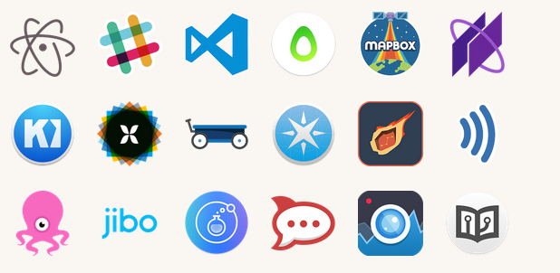

Electron
Build desktop apps using web technologies
Why?

How does it work?
you could also see it as a minimal Chromium browser, controlled by JavaScript
but you can of course use Metro UI CSS, Flat UI etc. to make is look similar to native
How simple this could be?
npm install electron-prebuilt --g
touch index.js index.html
var app = require('app');
var BrowserWindow = require('browser-window');
var mainWindow = null;
app.on('ready', function() {
mainWindow = new BrowserWindow({width: 800, height: 600});
mainWindow.loadUrl('file://' + __dirname + '/index.html');
mainWindow.on('closed', function() {
mainWindow = null;
});
});
<html>
<head>
<title>Hello World!</title>
</head>
<body>
<h1>Hello World!</h1>
We are using io.js <script>document.write(process.version)</script>
</body>
</html>
electron .
Application structure
// In main process.
var ipc = require('ipc');
ipc.on('asynchronous-message', (event, arg) => {
console.log(arg);
event.sender.send('asynchronous-reply', 'pong');
});
// In renderer process (web page).
var ipc = require('ipc');
ipc.on('asynchronous-reply', (arg) => {
console.log(arg);
});
ipc.send('asynchronous-message', 'ping');
remote module for the rescue
var BrowserWindow = remote.require('browser-window');
System integration
var menu = new Menu();
menu.append(new MenuItem({ label: 'MenuItem1', click: function() { console.log('item 1 clicked'); } }));
menu.append(new MenuItem({ type: 'separator' }));
menu.append(new MenuItem({ label: 'MenuItem2', type: 'checkbox'}));
Menu.setApplicationMenu(menu);
window.addEventListener('contextmenu', (e) => {
e.preventDefault();
menu.popup(remote.getCurrentWindow());
}, false);
app.on('window-all-closed', function() {
if (process.platform != 'darwin') {
app.quit();
}
});

debugging
native stuff
ex. node-applescript
child_process.exec etc.
Pain points & gotchas

https://github.com/sindresorhus/awesome-electron
Feedback welcome
IRL or krzysztof@kaczor.io